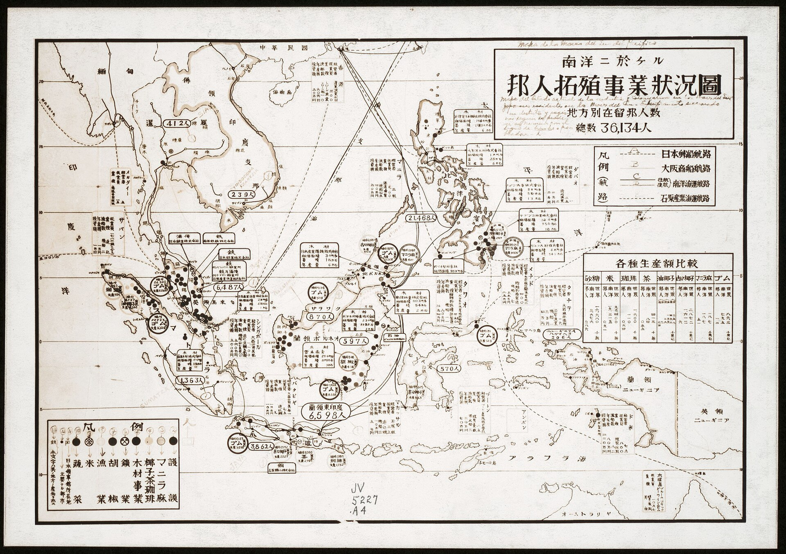

第 2 章
猪的航海图
船板在潮水里轻轻浮着。几头猪先被赶下跳板。它们没有成列，也没有被绳子牵着，只是被后面的水手用短棍催促，从船舷的斜板上一路往下，蹄子在木板上打滑。落到浅水里时，它们停了一会儿，泥浆漫

过腿弯。第一头猪把鼻子插进坦帕湾岸边的黑色淤泥，连拱了几下，才朝干岸上走。后面的猪跟着，排成松散的队，穿过一片被潮水压平的草叶。
岸上也有人在忙。几艘小艇来回搬运木箱和铁器，马匹被牵到稍高的地方，士兵们把长矛捆成几束。猪就在这中间走，自己走，不需要人领。
那是1539年5月的最后几天。德索托的船队在佛罗里达西海岸——后来被叫作坦帕湾的地方——抛锚。这场远征名义上的目的是寻找黄金和建立殖民地，但船上的补给清单比野心更早地说明了一件事：这次行军从一开始就预备着在远离海港的腹地待上很久。
清单是启程前在塞维利亚申报的。现在，它上面的文字已经走完了一段跨洋航程，正踩在佛罗里达的沙地上，一步一步往北去。塞维利亚的贸易商行里，补给监督官在1538年秋天登记过猪。
那一行写在咸牛肉和船用饼干之间，没有简写成“活物”，也没有混进别的牲口。登记册上写的是：猪，十三头，其中母猪十头。写完这一行，他在页边另外补了一句备注。现代抄录者辨认出的文字是：可放养，自行觅食，每四月产仔。
页边备注不是随口的解释。它是在回答官员核验清单时可能会问的问题。在那个时代的跨洋贸易申报中，每多一项物资，税负和检查就多一层，官员会问：这东西在船上怎么养，吃多少，到了地方是不是能用。监督官的回答把猪从“存量物资”转成了另一种类别：它能自己找食物，能按时繁殖。它带着补给制度的一部分责任，但并不完全依靠补给制度里的粮仓。
这个区别值得放慢看清楚。猪和大豆、面粉、腌肉不一样。后者的总量在上船那一时刻就固定了，只会减少，不会增加。猪的总量会在路上变动。
它会从十三头变成更多，或者变成更少。途中可以出售、宰杀、交换，也可以让它自己在地里长出下一批。补给官员把“每四月产仔”写进正式登记，等于接受了这种不确定性，并且把它写成一项预期。
这个预期的核心是：猪群不归某一个人赶，也不归某一个人喂。它被安排成一种松散的、能自我维持的行走储备，跟在远征队后面，哪里能翻出食物，就在哪里停一停。德索托之前，西班牙人已经这样运猪。哥伦布第二次西航时带过八头猪，据说西印度群岛上一些后来很常见的猪种与那批猪有关。科尔特斯在墨西哥时，军队里的人把猪叫作“行走的腌肉”。
到德索托出发时，活猪补给在塞维利亚的港口运作中已经有了成熟的挑选标准：体型不能太大，要耐粗饲，要能忍受船上的拥挤和噪音，要胆子足够大，在陌生地方也敢到处走。公猪在清单上的比例不高，因为补给的关键是母畜。十头母猪比十头公猪值钱。监督官在登记时写得清楚，不是十三头均匀分配，而是十头母猪配上三头公猪。这个性别比例本身就是繁殖方案。
船在海上走的那几个月，猪被安置在底层甲板的围栏里。具体的舱位安排没有留下完整记录，只知道远征队带着马匹、骡子、犬和数量不等的猪。它们要喝淡水和吃船上的残食。
船一靠岸，补给官就会派人把猪赶下船，在浅滩和树线之间放一会儿。船队里有专门的畜栏，也有看护活物的人员。这些人不是贵族，不参加军事会议，但他们的工作直接决定这支队伍能走多远。
德索托的大队从坦帕湾出发后，每到一处营地，猪先被安排在营地外缘。它们自己找橡子、块根、棕榈果，也吃营地倒出的废弃物。士兵们通常不会为了清点猪而整队。猪群的数量是在行军途中凭经验估的。如果晚上少了三头，没有人折返回去找。
关于猪群的逃逸，现存的远征随记里有一条不起眼的记载。记录者写道，某天夜里起了风暴，营地的围栏散开，五头猪跑进树林。没有人去追。这一句的措辞很克制，没有解释，也没有评论。它夹在天气、路程和一封土著首领的来书之间，像是顺手记下的杂事。
但“没有人去追”这五个字承担了很大的因果重量。它不说明森林太密，也不说明风暴太猛。它背后是一套已经被接受的损耗逻辑：猪被选作行走的粮仓时，散失就已经进入方案。
追回五头猪需要分出人手，需要离开熟悉的营地范围，需要在陌生地形上消耗时间。远征队的目标在内陆，不在树林边上。补给体系预留了这类损失，损失的频率和数量都处在可以承受的范围内。五头猪跑了，下次再补上。这个选择在当时毫不显眼，但它把猪留在了北美的森林里。
它们不是第一批跑进佛罗里达林地的家猪。更早的西班牙船只在海岸附近也放过猪，有记录的养殖和逃逸在岛屿上已经发生。
德索托这次特别的地方在于，远征队不是把猪留在一个港口，而是带着它们穿过北美东南部的大片土地。猪群沿途走失、被遗弃、被交换或因队伍减员而留下。到1542年德索托在密西西比河边死去，远征队残部乘船往下游撤退时，已经没有人能说清路上有多少猪散入森林。
这个数量不会出现在任何官方报告里。德索托死后的财产清点中，猪被列得很简略，甚至有的记录只写了“若干头”。它们是资产，可这资产已经失去了边界。这就会引出一种很自然的解释：猪这个物种太强了。
它们什么都吃，怀孕期短，适应力强，所以进入北美森林之后，自然会泛滥。按照这个说法，制度只是加快了时间表，没有改变结局。即使西班牙人不带猪，后来别的欧洲殖民者也会带，猪还是会跑，会繁殖，会形成野化种群。这个解释从生物特征出发，但没有回答一个关键问题：同一类猪，在伊比利亚半岛的森林里，为什么没有形成同等规模的失控种群？
埃斯特雷马杜拉的橡树林和安达卢西亚的灌丛地带同样有散养猪，也有从圈里跑掉的家猪。猪在那里也能翻拱，也能在野地里产仔。但半岛上的猪群长期被限制在一定范围内。
原因不是森林里没有食物，而是有人需要把猪找回来。猪有主人，森林有使用规则，村庄之间有关于散养猪的共同安排。到了十一月和十二月的橡果季节，猪被赶进林地，之后又被赶回。跑散的猪，主人会在几天内寻回，或者请邻近的牧人帮忙看住。有人在为猪负责。
北美的远征队没有这个责任结构。猪群属于远征，但远征没有能力也没有意愿在森林里执行所有权。
逃逸之后，猪在官方册子里消失了，但这不影响任务继续。森林里没有围栏，没有回收入员，没有赔偿机制。不是猪变野之后摆脱了人，而是人在制度上先松开了手。猪进入的是一块责任尚未建立起来的空间。
这是帝国后勤系统有意打开的缺口。清单上写着“可放养”，书记官记下“入林未追”，两者之间的逻辑是接得上的。
考古学在东南部的发现为这条线索添上了物质证据。佐治亚州的一处德索托营地遗址中，出土了一批猪骨。这些骨头被确认属于欧洲家猪，形态上与伊比利亚半岛的家猪一致。但牙齿表面留下了明显的高强度觅食磨损。报告写的是：与欧洲家猪骨形态一致，但有高强度觅食导致的牙齿磨损。这个描述把两头信息并排放着，一是家猪，二是觅食。它们不矛盾。
家猪的骨骼还没有发生足够长的演化，仍保留着欧洲家猪的形态。它们的牙却已经显示出在野外长期翻拱的痕迹。猪在吃地上的块根、带泥的种子、硬壳果实。砂粒和硬质颗粒在牙齿表面磨出细小擦痕。
这种磨损不是一次风暴夜之后形成的，也不会只靠吃营地垃圾出现。它需要足够长的时间，让一头家猪在野外的林地上反复用嘴拱开土壤。到1540年前后，德索托的猪已经在相当大的程度上靠北美森林生活。它们跟随远征队，却并不完全依赖远征队的饲料供给。这正是清单上“自行觅食”四个字在几千里外被骨头上体现出来的版本。
三件材料之间的距离很大。一份是塞维利亚的登记册，一份是佛罗里达行军的随记，还有一份是佐治亚探方里的猪骨。它们分属欧洲、海岸和内陆，隔着大西洋，也隔着相当长的时间。登记册写的是计划，随记写的是流失，骨头写的是后果。计划说这批猪可以放养，自行觅食；随记说它们跑了，没有追；骨头证明它们确确实实在野外觅食，而且觅食强度足以改变牙齿表面。
三者构成一条证据链，不需要借助“猪有野性”“自然终将胜利”这类更大的话，也能说明野化过程在远征体系的内部是怎样发生的。德索托的远征从一开始就不只是一支军队。它是一套移动的补给制度。
马需要草，士兵需要粮，船队有军需官，营地有物资清册。猪在这个体系里的位置，相当于一层临时的安全网。当面粉受潮、牛肉发臭、玉米被本土抵抗者烧掉时，猪可以被宰杀。猪群的损耗低，补充也快。
这个制度在短期内是有效的。远征队在北美东南部辗转四年，死亡人数很高，但补给从来没有中断到让队伍停下来。猪在其中发挥了相当实际的作用。
问题在于，这套补给制度对“逃逸”没有设置回收机制。在西班牙内战、在意大利作战、在佛兰德斯泥沼，猪群散失后，通常还能被当地的村庄或市场吸收。那里已经有人会为一头走失的家猪负责，总有一道栅栏把世界挡住。北美不是这样。
远征队的营地周围，是人口已经因疾病和冲突锐减的本土聚落。有些地方的耕作和定居在德索托经过之前就已经瓦解。猪跑进去的森林，不是无人之地，却是一个在原住民管理秩序被破坏之后出现的半空白地带。猪在这里没有进入任何人的账本。这个判断需要说得更直接一些。
野猪在后来几个世纪里成为美国东南部的生态压力，源头不只是生物学的扩散能力。它是西班牙帝国蓄意使用活体补给工具所致，是帝国将猪的繁殖力当作战备物资来管理之后，在任务中断、行政撤退的缝隙中留下的后果。若物种本身就能解释一切，那么在伊比利亚同样应该出现失控的野猪潮。但没有。
差别在许多土地谁对流失的猪有责任，谁能在猪造成损失之前把它收回。制度性地允许猪跑丢，猪就会跑丢。北美野猪的“入侵性”，是被这套制度激活的。
1542年夏天，德索托已经在密西西比河边死去。部下用皮裹了他的尸体，沉入夜色里的河水。远征队残余沿着密西西比河往下游走，最后从墨西哥湾沿岸撤出。
他们离开时，带不走的东西都丢在身后。猪不在优先带走的清单上。它们散布在沿途的林地、河岸和废弃营地里。没有清点，没有陷阱，没有防疫。
猪从远征队的附属物，转成了北美东南部生态的一部分。这个过程没有戏剧性可言。有些猪在围栏毁掉之后一夜走散，有些猪在主人死后慢慢离开营地，有些猪在队伍撤退时被留下。
在塞维利亚港的补给码头上，这种备注不是孤例。16世纪的西班牙跨洋远征已经形成了一套半正式的活体补给分类法。军需官和商行监督员在登记物资时，会用不同的措辞标记不同动物的用途。马匹被列为“战备畜力”，骡子被列为“负重运输”，猎犬被列为“追踪与警卫”。猪的备注栏里出现的那几个字——可放养、自行觅食、每四月产仔——实际上赋予它一个独特的后勤类别：自我增殖的移动储备。
这个分类不是德索托的发明，也不是某一位补给监督官的即兴发挥。它来自西班牙人在加那利群岛、伊斯帕尼奥拉岛和古巴积累的殖民经验。在那些地方，早期的远征队发现，带着腌肉和干粮深入内陆意味着补给线会越拉越长，而活猪可以在途中自行解决大部分口粮问题。更重要的是，在陌生环境中，猪比牛羊更不容易成为本土掠食者的首要目标，也更不依赖特定的草场。它们什么都吃，什么地方都能拱。
到了16世纪30年代，把猪编入远征清单的做法已经足够成熟，以至于塞维利亚贸易商会有专门的检查流程。监督官在登记猪的数量和性别时，会额外询问母猪的比例是否足够形成自然增殖。如果一头公猪配五头以上的母猪，会被认为比例失调，影响繁殖效率。登记册上十头母猪配三头公猪的配置，恰好符合当时最优的繁殖比例：每头公猪可以覆盖三到四头母猪，而十头母猪在理想条件下，按“每四月产仔”的周期计算，一年内可以把猪群总数从十三头推高到五十头以上。
这个算术并不复杂。补给监督官不需要懂生物学，只需要懂后勤。他知道面粉不会在海上变多，腌肉不会在仓库里生崽，但猪会。所以他在页边写上那行备注的时候，实际上是在为整支远征队写下一行隐形的补给预期：这批猪肉的总量不在登船的时刻决定，而在沿途的森林里决定。
这个预期顺着船舷传到了远征队的底层管理结构里。负责看管活物的底层人员通常不被记入正式编制。他们可能是水手出身、可能在码头上临时招募、也可能是债务缠身想在远征里碰运气的穷人。
但他们的工作有明确的操作惯例。猪群在船上的围栏需要每天清理，饮水需要从淡水桶里分配，遇到风浪时围栏外面要加绑绳索防止牲畜受伤。靠岸时，这些人先赶猪下船，让它们在浅滩上活动，吃岸边的植物和贝类，恢复长途航行中落下的膘。远征队行军时，猪群被安排在队伍中后段，与辎重车辆保持不远不近的距离。这个位置不是随便选的。
猪群太靠前会被行军踩踏惊散，太靠后容易掉队。中后段让它们可以沿着前面留下的食物残渣和翻开的土壤找食，同时跟得上整支队伍的速度。看管人员不需要清点每一头猪。他们的任务不是查数，而是让猪群在行军线路两侧活动，夜幕降临时尽量把猪赶回营地外缘。
但这个“尽量”本身就含着弹性。佛罗里达的森林不是安达卢西亚的牧场。橡树和胡桃木的树冠把地面遮得斑斑驳驳，灌木丛里藏着沼泽和溪流。猪一旦钻进密林，用鼻子拱开落叶层找块根，很快就消失在视线之外。看管人员最多在营地边缘叫喊几声，用棍子敲敲树干，然后就得回到营地。
远征队的人手向来紧张。士兵要巡逻、放哨、修整武器，工匠要修理马具和车辆，俘虏的土著向导要被看守。没有人会把看猪排进优先事项。十头母猪分散在十三头猪群里，只要不是一次全部跑光，第二天的行军不会受到实质影响。补给监督官在塞维利亚写下“可放养”时，已经算过这笔账：“放养”的意思，就是接受一定比率的失散，把失散当成维持自主觅食能力的必要代价。
风暴夜那次记录提供了一个具体的例子。随军书记官没有写风暴的强度和方向，没有写围栏是用什么材料搭建的，也没有写逃逸的五头猪是公是母。他只写了结果：栅栏损，失猪五头，入林未追。这句话的句法值得注意。
“栅栏损”是原因，“失猪五头”是结果，“入林未追”是处置。三个短句连在一起，中间不加转折词，不加解释性的连接。这种写法说明书记官认为这件事不需要解释。风暴毁坏营地在远征中是常见事故，猪跑掉也是常见事故。常见到不需要专门说明为什么没追。
但在不解释的背后，有一个被制度内化的判断：这五头猪已经不在补给系统里了。它们从“可放养”的状态变成了“已散失”的状态。补给清单上不会删掉这五头猪的位置，因为清单并不追踪个别的猪。它追踪的是猪群整体的趋势。只要母猪还在，趋势就不会断。猪群的数量在几天后就会被新出生的仔猪补回来，或者在沿途交易中从土著聚落换进新的活猪。散失不是系统的漏洞，而是系统在运转中产生的正常摩擦。
这个逻辑在伊比利亚半岛不成立。在埃斯特雷马杜拉的冬季橡果牧场，猪群同样会散开放养，在几百公顷的林地里自己找橡子吃。
但每一头猪的耳朵上都刻着主人的标记。邻近村庄有共同的牧猪人，他们受雇在橡果季节照看多个家庭的猪群，熟悉每头猪的活动范围。如果风暴掀开围栏，猪跑进邻村的林地，标记会告诉拾获者这头猪属于谁。主人最迟在几天内就会得到消息，雇人去赶回来。如果猪在野外造成了庄稼损失，赔偿由主人承担。如果拾获者擅自宰杀了有标记的猪，会面临盗窃指控。
这套制度把猪的逃逸限制在可回收的范围内。猪可以暂时脱离人的视线，但不会彻底脱离人的责任网络。北美森林里没有这套网络。远征队是移动的，营地是临时的，猪没有耳标，周围没有熟悉猪群的邻村。猪一旦跑进树林，就从制度里滑了出去。它变成森林里的一头四足动物，和鹿、野牛、熊共享同一片林地，没有主人会来找它。
这就是为什么“入林未追”四个字在佛罗里达和埃斯特雷马杜拉之间有完全不同的后果。在西班牙，未追是因为知道别人会追，或者知道猪最终会顺着食物和水源回到熟悉的区域。在北美，未追是真的不再追。不是一夜之间的疏忽，而是远征的补给制度在出发前就已经决定了对失散的态度：追回的成本超过了那头猪对远征的边际价值。
一头猪在远征途中被宰杀时，它的肉、脂肪、皮和骨头都归远征队使用。一头猪跑进森林时，它对远征的贡献归零，但这个归零是可以承受的，因为它没有消耗远征的人力去追。如果为了追回五头猪派出三名士兵花两天时间，这三名士兵的口粮、体力和安全风险加起来，可能比五头猪的价值更高。远征队的指挥官也许不会把这个算式写在纸上，但制度把算式写进了操作惯例里。
佐治亚遗址出土的猪骨把这个算式从纸面推到了物质层面。考古学家在探方里找到的猪下颌骨，其齿冠磨损模式与同时期欧洲家养猪有明显差异。欧洲家猪的牙齿磨损主要来自咀嚼加工过的饲料——磨碎的谷物、厨房残渣、浸泡过的豆类。这些食物相对柔软，含砂量低，齿面磨耗比较均匀。
但在佐治亚发现的猪牙上，咬合面呈现出不规则的深槽和擦痕，显微镜下可以看到釉质表面有微小的划痕和崩口。这是长期用嘴拱开含砂量高的土壤、咀嚼带泥的块根和硬壳坚果时才会形成的磨损模式。
野猪会有这种磨损，但这头猪的颅骨和下颌骨形态还保留着家猪的特征：吻部较短，额骨较陡，臼齿尺寸没有达到野化种群经过数代选择后的那种粗壮程度。这是一头骨骼还是家猪、但牙齿已经在过野猪生活的猪。它在远征队营地附近活动了一段时间，吃的是森林里的食物，翻的是林地里的土。
报告里那句“有高强度觅食导致的牙齿磨损”，在学术表述的冷静下面压着一层事实：这头猪在死前已经有了相当长一段时间的野化生存。
它们都继续找食，继续产仔。到十六世纪中叶，从佛罗里达沿海到阿巴拉契亚山麓的森林里，已经有了数量不明的野化猪群。它们的祖先不只是一头逃出围栏的猪，也是一套已经崩溃的后勤制度。考古队的下午很安静。遗址表土已经揭去，探方边上的土被堆成整齐的小丘。
一名考古学家在清理一块窄长的下颌骨。它很小，不像牛，也不像鹿。他先用竹签拨开一边的泥，再用软毛刷扫牙冠。阳光斜着照进去，咬合面上有细密的亮痕。那是砂粒和硬壳果实反复作用后留下的磨耗。他取下眼镜，用放大镜看了看牙根处的骨壁，然后把骨头翻过来，放进事先写好的标本袋。
袋子外面已经有编号，还空着年代和层位。他补了一行：Site 7, Layer 3, c. 1540。封口之前，袋子在风里轻轻响了一下。周围还有很多土没有过筛，几块碎陶片摆在另一只托盘里。下午的工作还要继续。但这一块下颌骨已经足够说明，早在北美的土地制度尚未成形之前，猪的牙齿已经在这片大陆上磨出了野化的痕迹。
它在袋中等待着，和塞维利亚登记册上的那行备注、随军书记的那句“入林未追”归入同一部档案。至于它的后代，还要在接下来的四个世纪里，与这片大陆上逐渐建立起来的栅栏、法律、猎场和许可证相遇。